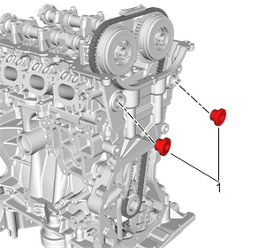
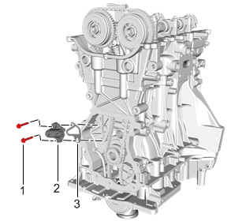
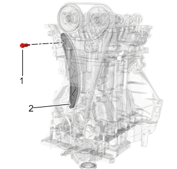
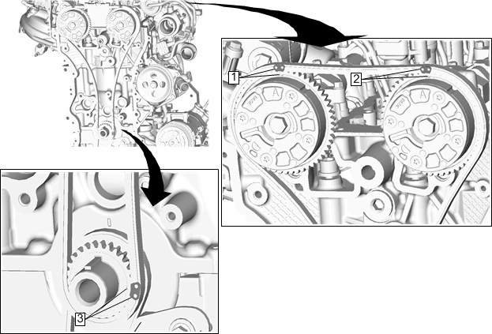

正时链条导板的更换－右侧
拆卸程序
1.
拆下发动机前盖。参见
发动机前盖的更换（LI6）
、
发动机前盖的更换
。

2.
拆下气缸盖堵塞（1），以接近正时链条左右导板的螺栓。

注意:
使张紧器柱塞复位，检查操作是否正确。参见
凸轮轴正时链条和链轮的清洁与检查
。
3.
拆下正时链条张紧器紧固件（1）、张紧器（2）和衬垫（3）。
注意:
报废衬垫。

4.
拆下正时链条右侧导板紧固件（1），然后拆下正时链条右侧导板（2）。
5.
必要时，检查正时链条。关于凸轮轴正时链条、机油喷嘴、链轮和张紧器的清洁与检查，参见
凸轮轴正时链条和链轮的清洁与检查
。
安装程序
1.
定位正时链条右侧导板（2），然后用手初步拧紧紧固件（1）。紧固至
10牛米（89英寸磅力）
。
注意:
安装前，确保张紧器完全缩回。根据张紧器的型号，压下并锁止柱塞的程序不同。
告诫：
参见
有关紧固件的告诫
。
2.
定位正时链条张紧器（2）和衬垫（3），然后用手初步拧紧紧固件（1）。紧固至
10牛米（89英寸磅力）
。
注意:
安装新的衬垫。
3.
安装气缸盖堵塞（1），紧固至
75牛米（55英尺磅力）
。

4.
检查正时链条标记，确认它们在正时链条张紧器接合后仍对齐。
5.
用合适的工具将曲轴转动一个完整的发动机循环，然后确认正时链条标记（1、2和3）是否正确对齐。
6.
安装发动机前盖。参见
发动机前盖的更换（LI6）
、
发动机前盖的更换
。